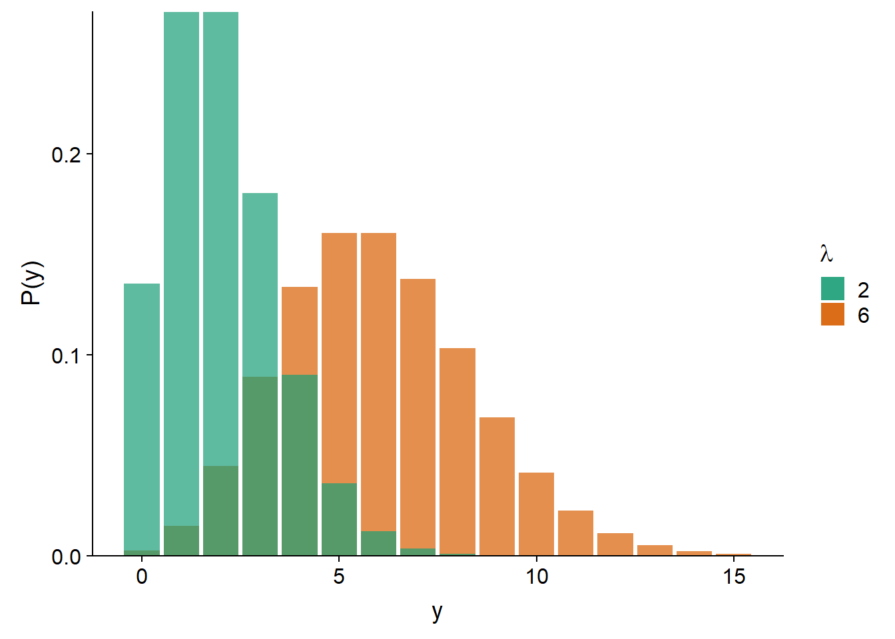
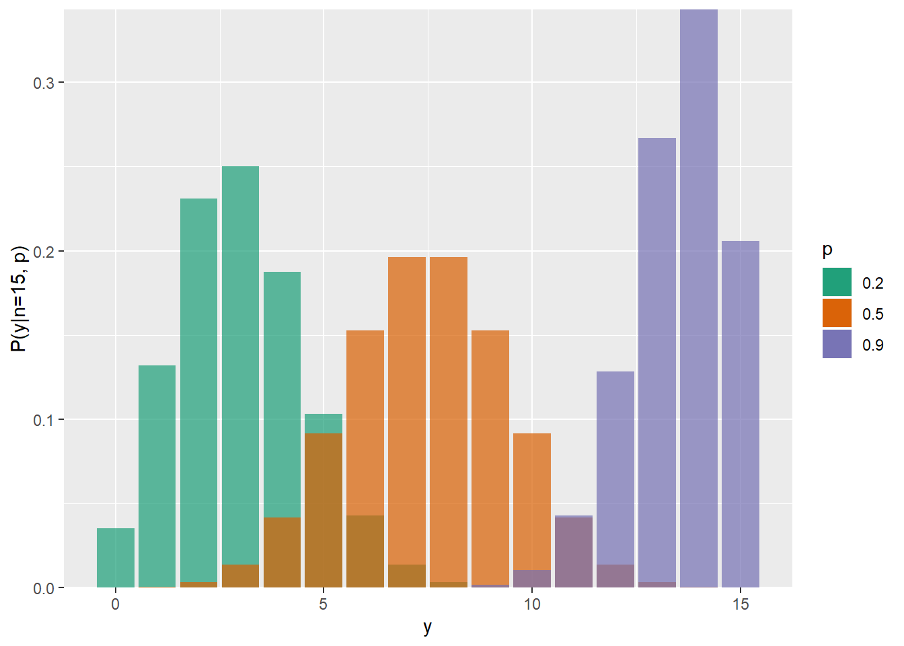
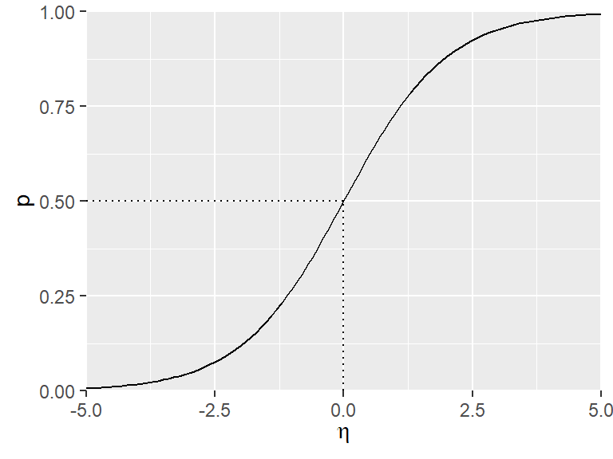
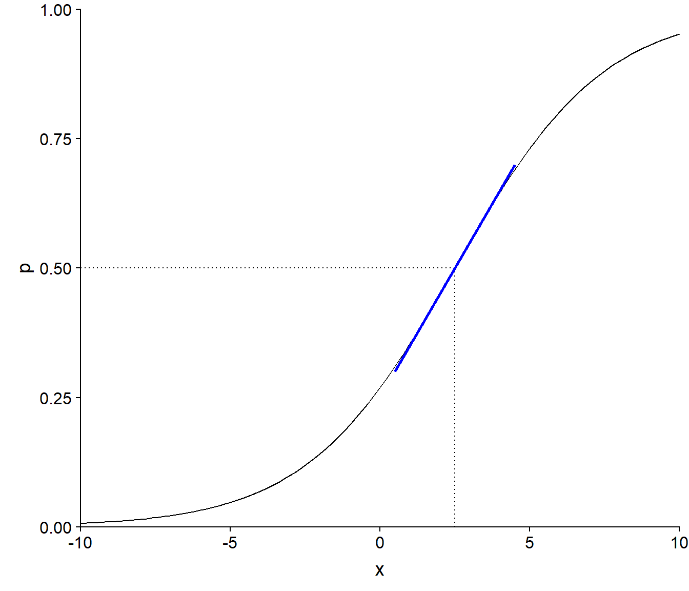
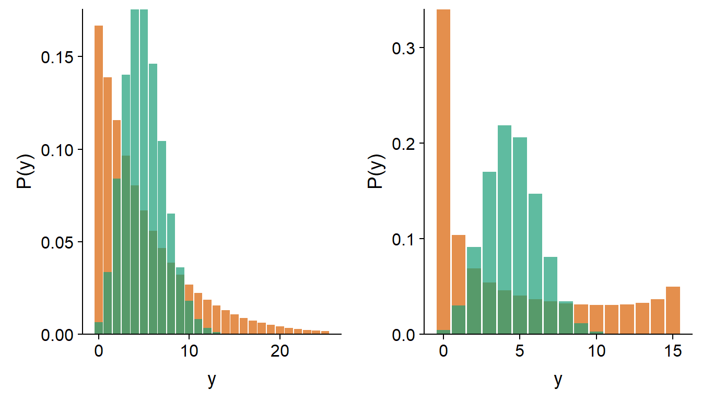
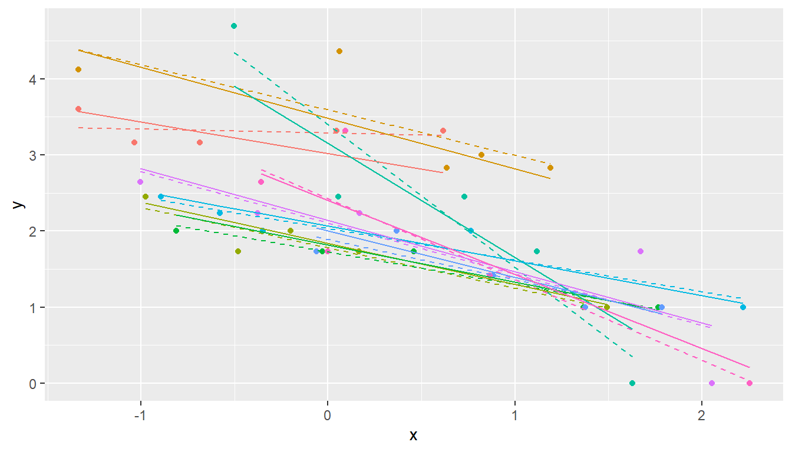
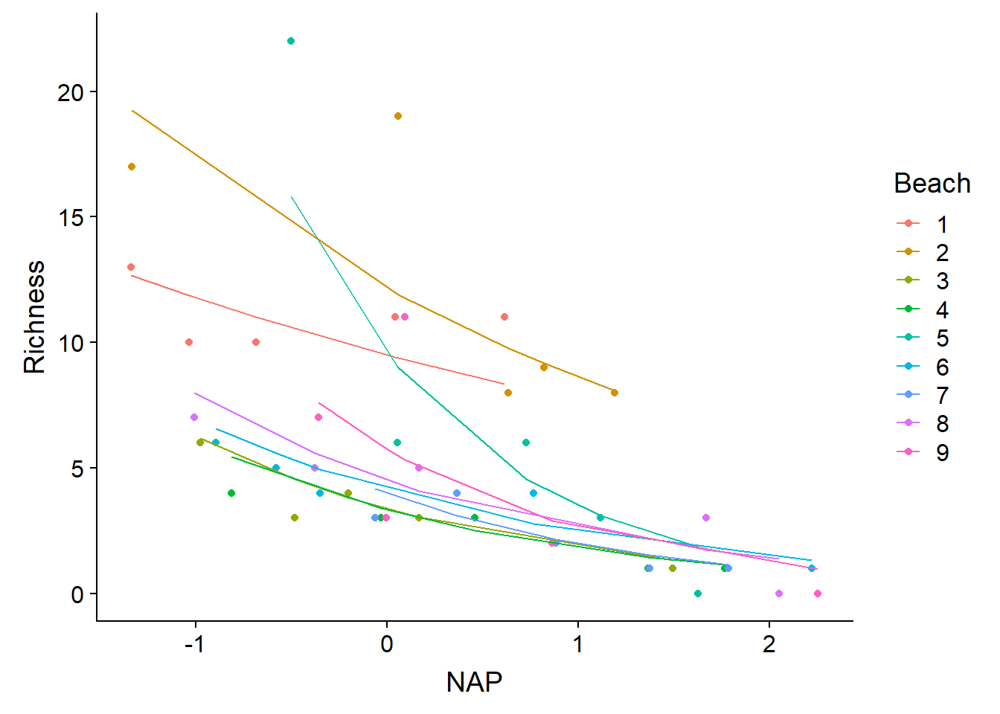
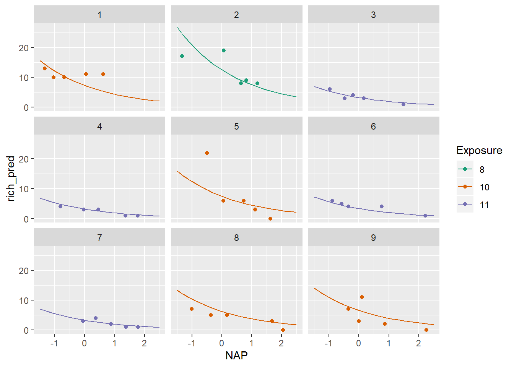
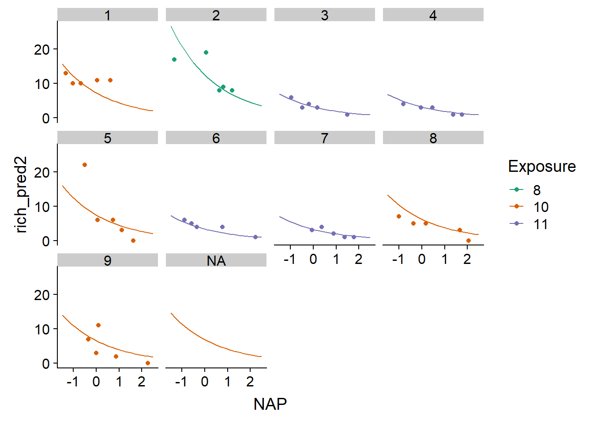
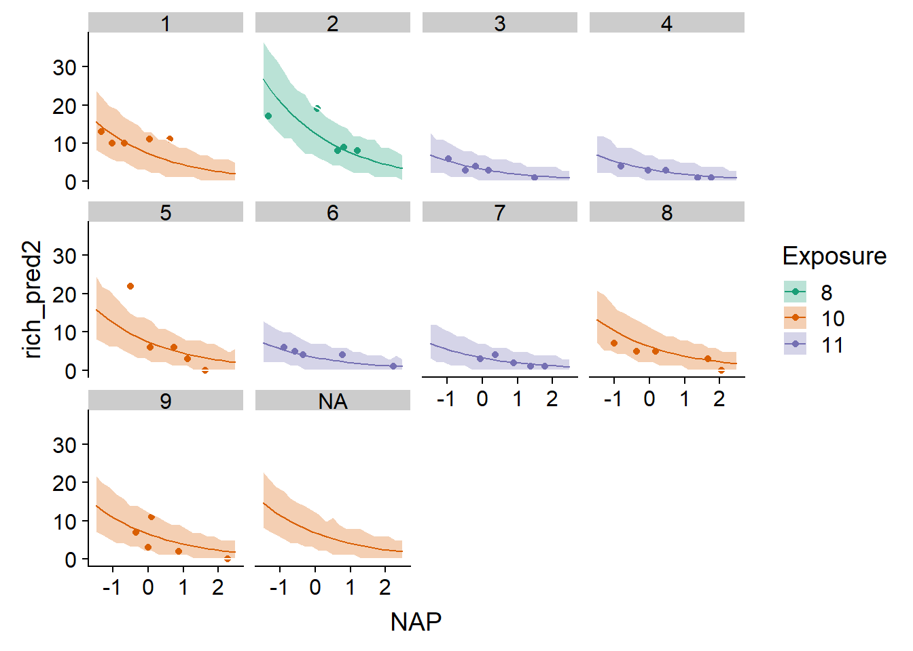

Modèles linéaires généralisés à effets mixtes
Introduction
Les modèles linéaires généralisés à effets mixtes combinent les caractéristiques des modèles linéaires généralisés (modéliser des variables non-normalement distribuées, spécialement des données binaires et de comptage) et des modèles à effets mixtes (modéliser des données groupées). Dans ce cours, nous réviserons d’abord des concepts vus dans le cours préalable, avant de discuter des particularités des GLMM au niveau de l’estimation de paramètres, de l’évaluation et de la comparaison de modèles.
Contenu du cours
Révision: modèles linéaires généralisés et modèles linéaires mixtes
Modèles linéaires généralisés à effets mixtes (GLMM): forme mathématique et techniques d’estimation
Évaluer l’ajustement d’un GLMM
Comparer différentes versions d’un GLMM
Prédictions et simulations à partir d’un GLMM
Modèles linéaires généralisés
En utilisant un modèle de régression linéaire pour expliquer une variable aléatoire \(y\) en fonction de prédicteurs \(x_1, ..., x_m\), nous supposons à la fois une relation spécifique entre la réponse moyenne et les prédicteurs, ainsi qu’une distribution spécifique de la variation de \(y\) autour de sa moyenne. Plus précisément:
la moyenne de \(y\) est une fonction linéaire des \(x_i\): \(\mu = \beta_0 + \sum_{i = 1}^m \beta_i x_i\); et
\(y\) suit une distribution normale d’écart-type constant autour de cette moyenne: \(y \sim N(\mu, \sigma)\).
Plusieurs variables mesurées en sciences environnementales sont mal représentées par ce modèle, notamment les données binaires (ex.: présence/absence, mortalité/survie) ou de comptage (ex.: nombre d’individus, nombre d’espèces). D’une part, un modèle linéaire de la moyenne n’inclut pas les contraintes de ces données: la probabilité moyenne de présence doit être entre 0 et 1; le nombre moyen d’individus ne peut être négatif. D’autre part, la variance de ces données n’est pas constante: la présence d’une espèce est plus variable si la présence moyenne est de 50% que si elle s’approche de 0 ou 1; la variance des données de comptage tend à augmenter avec leur moyenne. Il n’est pas non plus toujours possible de transformer les données pour approcher suffisamment la normalité et l’homogénéité des variances.
Les modèles linéaires généralisés (GLM) aident à résoudre ces problèmes. Dans un GLM, le prédicteur linéaire \(\eta\) (combinaison linéaire des prédicteurs) est relié à la moyenne de la réponse par une fonction de lien \(g\):
\[g(\mu) = \eta = \beta_0 + \sum_{i = 1}^m \beta_i x_i\]
et différentes distributions peuvent être utilisées pour représenter la variation de \(y\) relativement à \(\mu\).
La régression linéaire est donc un exemple de GLM où \(\mu = \eta\) (lien identité) et \(y\) suit une distribution normale. La régression logistique, avec un lien logit et une distribution binomiale de la réponse, convient aux données binaires; tandis que la régression de Poisson, avec un lien log et une distribution de Poisson, convient aux données de comptage. Voici un tableau comparatif de ces trois modèles:
| Modèle | Distribution | Lien par défaut | Inverse du lien |
|---|---|---|---|
| Régression linéaire | Normale: \(y \sim N(\mu, \sigma)\) | Identité: \(\mu = \eta\) | \(\mu = \eta\) |
| Régression logistique | Binomiale: \(y \sim B(n, p)\) | Logit: \(\log(p/(1-p)) = \eta\) | \(p = 1/(1+e^{-\eta})\) |
| Régression de Poisson | Poisson: \(y \sim Pois(\lambda)\) | Log: \(\log(\lambda) = \eta\) | \(\lambda = e^{\eta}\) |
Régression de Poisson
La distribution de Poisson peut être utilisée pour représenter une réponse \(y\) qui prend des valeurs entières supérieures ou égales à 0. Théoriquement, cette distribution représente le nombre d’événements observés dans un intervalle (temporel ou spatial) donné, lorsque les événements sont indépendants les uns des autres.
Par exemple, si \(y\) est le nombre de clients entrant dans une boutique durant une période d’une heure donnée à chaque jour, en supposant que chaque personne agit indépendamment, alors \(y\) pourrait suivre une distribution de Poisson.
Cette distribution contient un seul paramètre ajustable, \(\lambda\), qui correspond à la fois à la moyenne et la variance de \(y\).
\[P(y | \lambda) = \frac{\lambda^y}{y!} e^{-\lambda}\]
Comme nous pouvons voir sur le graphique ci-dessous, pour un petit \(\lambda\), la distribution est davantage asymétrique (puisque \(y\) ne peut pas être inférieur à zéro); plus \(\lambda\) augmente, la distribution s’approche de la symétrie et d’une forme normale.

La régression de Poisson utilise le plus souvent un lien logarithmique:
\[\log{\lambda} = \beta_0 + \sum_{i = 1}^m \beta_i x_i\]
En inversant ce lien, on constate que \(\lambda\) est l’exponentielle du prédicteur linéaire. Cela assure que \(\lambda\) soit toujours positif. Puisque \(e^0 = 1\), une valeur négative du prédicteur linéaire correspond à \(\lambda < 1\) et une valeur positive à \(\lambda > 1\).
\[\lambda = e^{\beta_0 + \sum_{i = 1}^m \beta_i x_i}\]
Aussi, puisque l’exponentielle transforme les effets additifs en effets multiplicatifs:
\[\lambda = e^{\beta_0} e^{\beta_1 x_1} e^{\beta_2 x_2} \ldots\]
nous pouvons interpréter séparément l’effet de chaque prédicteur. Par exemple, si \(x_1\) augmente de 1, alors la moyenne de la réponse est multipliée par \(e^{\beta_1}\).
Régression logistique
Supposons qu’une réponse binaire soit codée 0/1 (ex.: absence/présence, échec/succès). Si \(y\) est le nombre de réponses positives (1) parmi \(n\) réplicats indépendants qui partagent la même probabilité \(p\) d’obtenir une réponse positive, alors \(y\) suit une distribution binomiale \(Bin(n, p)\).
\[P(y \vert n, p) = \binom{n}{y} p^y(1-p)^{n-y}\]
La moyenne de \(y\) est égale à \(np\) et la variance à \(np(1-p)\). En pratique, cela signifie que la variance est maximale pour \(p = 0.5\) et diminue à mesure que \(p\) s’approche de 0 ou 1.

Dans un contexte de régression, \(n\) est connu et nous cherchons à estimer comment \(p\) varie en fonction des prédicteurs.
Souvent, \(n = 1\), c’est-à-dire que nous modélisons les observations individuelles du résultat binaire en fonction des conditions environnementales. Les cas où \(n > 1\) sont souvent des expériences contrôlées. Par exemple, si nous voulons déterminer la probabilité de germination de semences en fonction de l’humidité du sol, nous pourrions planter un groupes de \(n = 20\) semences pour chaque valeur de l’humidité; la réponse \(y\) serait le nombre de germinations observées sur une possibilité de 20.
La régression logistique tient son nom du fait qu’une fonction logistique est utilisée pour transformer le prédicteur linéaire \(\eta\) en une probabilité \(p\) entre 0 et 1.
\[p = \frac{1}{1 + e^{-\eta}}\]
Cette fonction prend une valeur de 0.5 si \(\eta = 0\) et s’approche de 0 et 1 (sans jamais les atteindre) pour des valeurs très négatives et positives de \(\eta\), respectivement.

L’inverse de la fonction logistique est le lien logit:
\[\eta = \text{logit}(p) = \log \left( \frac{p}{1-p} \right)\]
En raison de la forme non-linéaire de la fonction logistique, l’effet de chaque prédicteur sur la probabilité \(p\) n’est pas constant. Cet effet est maximal autour de \(p = 0.5\). Autrement dit, plus près nous sommes des conditions où les probabilités de réponses positives et négatives sont égales, plus cette probabilité est sensible à une variation des prédicteurs.
\[p = \frac{1}{1 + e^{-(\beta_0 + \sum_{i = 1}^m \beta_i x_i)}}\]
On peut démontrer que la pente maximale de \(p\) en fonction d’un prédicteur \(x_i\), lorsque \(p = 0.5\), est égale à \(\beta_i / 4\).
Par exemple, le graphique ci-dessous présente \(p\) vs. \(x\) pour un modèle logistique où \(\text{logit}(p) = -1 + 0.4x\).

La valeur de \(x\) pour laquelle \(p = 0.5\) est la solution de l’équation \(-1 + 0.4x = 0\), donc \(x = 2.5\). La pente de \(p\) vs. \(x\) autour de ce point (illustrée en bleu) est de \(0.4/4 = 0.1\).
Modèles linéaires généralisés dans R
Dans R, nous utilisons la fonction glm pour ajuster un modèle linéaire généralisé. Comme pour lm, nous spécifions une formule de la forme reponse ~ predicteurs et un jeu de données data d’où proviennent les variables; en plus, glm requiert de spécifier la famille de distributions utilisée (ex.: binomial ou poisson).
glm(y ~ x1 + x2 + ..., data = ..., family = binomial)On pourrait aussi spécifier la fonction de lien: family = binomial(link = "logit"), mais ce n’est pas nécessaire si on utilise le lien par défaut (logit pour binomial, log pour Poisson).
Le code ci-dessus s’applique pour une régression logistique si la variable réponse y contient des valeurs binaires (0 ou 1). Si chaque rangée résume plusieurs résultats binaires, alors il faut spécifier les variables comptant le nombre de résultats positifs et négatifs, ex.: pos et neg, comme suit:
glm(cbind(pos, neg) ~ x1 + x2 + ..., data = ..., family = binomial)Surdispersion
Dans une régression linéaire, la variance résiduelle \(\sigma^2\) est la même pour toutes les observations et est estimée indépendamment de la tendance moyenne. Pour les modèles linéaires généralisés avec distribution de Poisson ou binomiale, la variance dépend de la valeur moyenne (donc des prédicteurs pour chaque observation) et cette relation est fixée par la distribution. Ainsi, la variance est toujours égale à \(\lambda\) (Poisson) ou \(np(1-p)\) (binomiale).
En ajustant un modèle linéaire généralisé, il est donc possible que la tendance moyenne soit bien représentée par le modèle, mais que la variance résiduelle dépasse celle prévue par la distribution théorique. Dans le graphique ci-dessous, les histogrammes en vert représentent une distribution de Poisson avec \(\lambda = 5\) (à gauche) et une distribution binomiale avec \(n = 15\) et \(p = 0.3\) (à droite). Les histogrammes en orange représentent des distributions avec la même moyenne, mais présentant une surdispersion.

Note: Dans le cas d’une régression logistique où la réponse est binaire (i.e. binomiale avec \(n = 1\)), il ne peut pas y avoir de surdispersion.
Nous discuterons plus tard dans le cours des méthodes pour identifier la surdispersion et de modèles alternatifs pour les données surdispersées.
Modèles linéaires mixtes
Considérons la régression linéaire simple pour \(n\) observations d’une variable réponse \(y\) et d’un prédicteur \(x\). Selon ce modèle, l’observation \(y_k\) (pour \(k = 1, 2, ..., n\)) suit une distribution normale \(N(\mu_k, \sigma_y)\) avec une moyenne \(\mu_k = \beta_0 + \beta_1 x_k\).
Supposons maintenant que les \(n\) observations soient groupées. Par exemple, il pourrait s’agir de points d’échantillonnage répartis sur quelques sites distincts; d’un sondage réalisé auprès de membres de différentes communautés; où de mesures répétées effectuées sur les mêmes individus à différents moments. Dans tous ces cas, nous nous attendons à ce que la variation résiduelle de la réponse (non-expliquée par les prédicteur) ne soit pas indépendante d’une observation à l’autre. En particulier, les observations d’un même groupe tendent à être plus similaires que les observations de groupes différents, en raison de facteurs non-mesurés qui varient au niveau du groupe plutôt que de l’observation individuelle.
Un modèle linéaire mixte représente cette situation en permettant aux coefficients du modèle linéaire de varier d’un groupe à l’autre, selon une distribution normale. Dans le modèle précédent, si \(\beta_0\) et \(\beta_1\) varient d’un groupe à l’autre et que \(j[k]\) désigne le groupe \(j\) contenant l’observation \(k\), alors la valeur moyenne de cette observation selon le modèle mixte est égale à:
\[\mu_k = \beta_{0j[k]} + \beta_{1j[k]} x_k\]
Dans ce modèle, \(y_k\) suit une distribution normale:
\[y_k \sim N(\mu_k, \sigma_y)\]
tout comme les paramètres \(\beta_0\) et \(\beta_1\). Par exemple, pour l’ordonnée à l’origine:
\[\beta_{0j} \sim N(\mu_{\beta_0}, \sigma_{\beta_0})\]
Les modèles mixtes tirent leur nom du fait qu’ils combinent des effets fixes spécifiés par les prédicteurs comme \(x\) et des effets aléatoires représentant la variation entre groupes. L’ajustement d’un modèle linéaire mixte nous permettrait d’estimer la moyenne des coefficients \(\beta_0\) et \(\beta_1\), l’écart-type de ces coefficients d’un groupe à l’autre, ainsi que \(\sigma_y\), l’écart-type des observations individuelles par rapport aux moyennes de groupes.
En outre, le modèle mixte produit des estimés des coefficients pour chaque groupe, ici \(\beta_{0j}\) et \(\beta_{1j}\). Un modèle avec un effet fixe de groupe qui interagit avec \(x\) produit aussi des estimés de l’ordonnée à l’origine et de la pente de \(y\) vs. \(x\) pour chaque groupe. Cependant, ces effets fixes sont estimés indépendamment à partir des données de chaque groupe, tandis que les effets aléatoires du modèle mixte proviennent d’une distribution centrée sur la valeur moyenne de l’ensemble des groupes.
Concrètement, le modèle mixte “contracte” les effets de chaque groupe en direction de l’effet moyen, comme nous pouvons le constater sur le graphique ci-dessous, où chaque couleur représente un groupe différent et les droites de régression sont estimées pour des effets aléatoires (traits pleins) ou fixes (tirets) au niveau du groupe. Les pentes des droites pleines sont plus semblables l’une de l’autre que les pentes des droites en tirets, car on suppose qu’elle proviennent d’une distribution commune.

L’effet de contraction est basé sur l’idée qu’une partie des différences observées entre groupes sont dues au hasard de l’échantillonnage plutôt qu’à des différences réelles entre les populations. Notamment, la contraction est plus prononcée lorsqu’il y a peu d’observations dans le groupe, conformément au fait qu’une plus grande portion de la différence est attribuable au hasard dans le cas d’un petit échantillon.
Comme nous verrons plus tard, la modélisation d’effets aléatoires de groupe permet aussi de prédire la réponse moyenne et son incertitude pour un nouveau groupe qui était absent des données utilisées pour ajuster le modèle.
Finalement, un autre avantage des modèles mixtes est que nous pouvons inclure à la fois un effet aléatoire de groupe et l’effet d’un prédicteur qui varie au niveau du groupe. Par exemple, la variation de l’ordonnée à l’origine \(\beta_0\) entre les groupes peut dépendre de la valeur d’un prédicteur \(u\):
\[\beta_{0j} \sim N(\gamma_0 + \gamma_{1j} u_j, \sigma_{\beta_0})\]
Puisque la variation de la réponse est modélisée à plusieurs niveaux (groupe et observation individuelle), les modèles mixtes sont aussi nommés “modèles hiérarchiques”.
Par exemple, supposons que nous mesurons la biodiversité des plantes dans des quadrats situés sur différents sites ayant subi une perturbation. Ici, les quadrats sont donc groupés par site. Dans ce cas, un exemple de prédicteur \(u\) défini au niveau du groupe serait l’intensité de la perturbation à un site, tandis que les prédicteurs \(x_1, x_2, ...\) au niveau des observations individuelles représenteraient des mesures prises dans chaque quadrat.
En résumé, les modèles mixtes sont particulièrement utiles si une ou plusieurs des conditions suivantes s’appliquent:
les données sont groupées ou ont une structure hiérarchique à deux ou plusieurs niveaux (ex.: placettes regroupées par sites regroupés par région);
les variables explicatives sont aussi définies à plusieurs niveaux;
le nombre de groupes est trop grand, ou le nombre d’observations dans certains groupes est trop petit, pour estimer un effet séparé pour chaque groupe;
on s’intéresse davantage à la variation entre les groupes qu’à l’effet de groupes particuliers;
on souhaite appliquer le modèle à des groupes où aucune mesure n’a été prise.
Modèles linéaires mixtes dans R
Nous utiliserons dans ce cours le package lme4 pour ajuster des modèles mixtes. La fonction lmer de ce package estime les paramètres d’un modèle linéaire mixte. Les formules utilisées par lmer suivent la forme reponse ~ predicteurs, avec une syntaxe spécifique pour les effets aléatoires.
Dans l’exemple suivant, g est la variable contenant les identifiants des groupes dans le jeu de données df. Le terme (1 + x | g) indique de modéliser un effet aléatoire du groupe g pour l’ordonnée à l’origine (codée “1”) et le coefficient de x. Si seule l’ordonnée à l’origine variait par groupe, donc si la pente de \(y\) vs. \(x\) était fixée à une seule valeur pour tous les groupes, on pourrait écrire (1 | g).
library(lme4)
lmer(y ~ x + u + (1 + x | g), data = df)Notez que les prédicteurs définis au niveau du groupe (comme u) apparaissent dans la formule comme n’importe quel autre prédicteur.
Modèles linéaires généralisés à effets mixtes
Les modèles linéaires généralisés à effets mixtes (abbréviés GLMM, pour generalized linear mixed models) combinent les caractéristiques des deux types de modèles vus précédemment.
- Comme pour les modèles linéaires généralisés, différentes distributions sont possibles pour la réponse \(y\) et la moyenne de \(y\) est reliée au prédicteur linéaire par une fonction de lien:
\[g(\mu) = \eta = \beta_0 + \sum_{i = 1}^m \beta_i x_i\]
- Comme pour les modèles linéaires mixtes, les coefficients du prédicteur linéaire varient aléatoirement entre les groupes. Notez que cette variation suit toujours une distribution normale.
Exemple
Le jeu de données rikz.csv, tiré du manuel de Zuur et al. (voir références en bas page), présente des données sur les communautés benthiques de 9 plages des Pays-Bas. La richesse spécifique (Richness) a été mesurée pour 5 sites sur chacune des 9 plages (Beach) pour un total de 45 observations. La variable NAP mesure la position verticale de chaque site par rapport au niveau moyen de la mer, tandis que l’indice d’exposition aux vagues (Exposure) est mesuré à l’échelle de la plage.
rikz <- read.csv("../donnees/rikz.csv")
# Exprimer Beach et Exposure comme des variables catégorielle (facteurs)
rikz <- mutate(rikz, Beach = as.factor(Beach),
Exposure = as.factor(Exposure))
head(rikz)## Sample Richness Exposure NAP Beach
## 1 1 11 10 0.045 1
## 2 2 10 10 -1.036 1
## 3 3 13 10 -1.336 1
## 4 4 11 10 0.616 1
## 5 5 10 10 -0.684 1
## 6 6 8 8 1.190 2Puisque la richesse spécifique représente le compte des espèces à un site, nous pouvons modéliser cette réponse par une régression de Poisson, avec un effet fixe de la position verticale et un effet aléatoire de la plage sur les deux coefficients.
Le package lme4 contient une fonction glmer pour estimer les paramètres d’un GLMM. Celle-ci est semblable à lmer, excepté qu’on spécifie la distribution non-normale de la réponse par le biais du paramètre family.
glmm_res <- glmer(Richness ~ NAP + (1 + NAP | Beach), data = rikz, family = poisson)
summary(glmm_res)## Generalized linear mixed model fit by maximum likelihood (Laplace
## Approximation) [glmerMod]
## Family: poisson ( log )
## Formula: Richness ~ NAP + (1 + NAP | Beach)
## Data: rikz
##
## AIC BIC logLik deviance df.resid
## 218.7 227.8 -104.4 208.7 40
##
## Scaled residuals:
## Min 1Q Median 3Q Max
## -1.35846 -0.51129 -0.21846 0.09802 2.45384
##
## Random effects:
## Groups Name Variance Std.Dev. Corr
## Beach (Intercept) 0.2630 0.5128
## NAP 0.0891 0.2985 0.18
## Number of obs: 45, groups: Beach, 9
##
## Fixed effects:
## Estimate Std. Error z value Pr(>|z|)
## (Intercept) 1.6942 0.1868 9.071 < 2e-16 ***
## NAP -0.6074 0.1374 -4.421 9.81e-06 ***
## ---
## Signif. codes: 0 '***' 0.001 '**' 0.01 '*' 0.05 '.' 0.1 ' ' 1
##
## Correlation of Fixed Effects:
## (Intr)
## NAP 0.121D’après la section Fixed effects du sommaire, l’ordonnée à l’origine moyenne est de 1.69 et l’effet moyen du NAP est de -0.61. Puisque la régression de Poisson utilise un lien log par défaut, ces coefficients signifient que la richesse moyenne est de \(e^{1.69} = 5.42\) espèces si NAP = 0 et est multipliée par \(e^{-0.61} = 0.54\) (i.e. diminue de 46%) pour chaque augmentation d’une unité du NAP. D’après la section Random effects, l’écart-type de l’ordonnée à l’origine entre les plages est de 0.51 et l’écart-type du coefficient du NAP est de 0.30. S’il s’agissait d’un modèle linéaire mixte, nous obtiendrions aussi un estimé de l’écart-type résiduel (intra-groupe), mais ce n’est pas le cas ici, car la variance résiduelle est fixée par la moyenne dans la distribution de Poisson.
La fonction ranef produit les estimés de la différence entre la valeur d’un coefficient pour chaque groupe et sa valeur moyenne, tandis que coef retourne les valeurs des coefficients par groupe, donc la somme de ranef et des effets fixes.
ranef(glmm_res)## $Beach
## (Intercept) NAP
## 1 0.5579965 0.39325120
## 2 0.8038562 0.26321427
## 3 -0.4823311 -0.01681456
## 4 -0.4922817 -0.00227238
## 5 0.5590590 -0.40091320
## 6 -0.2740162 0.09140229
## 7 -0.3072758 -0.09381168
## 8 -0.1895568 0.03540481
## 9 0.0541533 -0.18368180
##
## with conditional variances for "Beach"coef(glmm_res)## $Beach
## (Intercept) NAP
## 1 2.252151 -0.2141373
## 2 2.498011 -0.3441742
## 3 1.211824 -0.6242030
## 4 1.201873 -0.6096609
## 5 2.253214 -1.0083017
## 6 1.420139 -0.5159862
## 7 1.386879 -0.7012001
## 8 1.504598 -0.5719837
## 9 1.748308 -0.7910703
##
## attr(,"class")
## [1] "coef.mer"Comme pour les modèles linéaires généralisés, il est utile de représenter graphiquement la relation non-linéaire entre la réponse et les prédicteurs estimée par le modèle. Le graphique ci-dessous superpose les données observées (points) et les valeurs attendues du modèle (fitted, lignes) pour chaque plage.
ggplot(rikz, aes(x = NAP, y = Richness, color = Beach)) +
geom_point() +
geom_line(aes(y = fitted(glmm_res)))
Estimation des coefficients d’un GLMM
Pour un modèle mixte, la probabilité d’avoir observé une valeur donnée de la réponse dépend non seulement des paramètres (fixes, mais inconnus), mais aussi de la valeur des effets aléatoires pour le groupe contenant cette observation. Ainsi, pour calculer la fonction de vraisemblance en fonction des paramètres à estimer, il faut faire la moyenne de la probabilité des données observées pour l’ensemble des valeurs possibles des effets aléatoires de groupe (mathématiquement, il s’agit d’une intégrale).
Dans le cas d’un modèle linéaire mixte, l’équation se simplifie et permet d’estimer séparément d’une part les effets fixes, d’autre part les variances associées aux effets de groupes et à la variation résiduelle entre individus. La méthode qui s’applique dans ce cas est une version modifiée du maximum de vraisemblance appelée maximum de vraisemblance restreint (restricted maximum likelihood ou REML). Sans entrer dans les détails, le REML estime les paramètres de variance sur la base des résidus indépendants du modèle après estimation des effets fixes. En pratique, cela assure que les variances sont basées sur le bon nombre de degrés de liberté résiduels et corrige le biais lié à l’estimation des variances par maximum de vraisemblance.
Pour un GLMM, il n’existe pas de simplification correspondante et plusieurs méthodes ont été proposées pour approximer numériquement l’intégrale contenue dans la fonction de vraisemblance. La méthode que glmer utilise par défaut est l’approximation de Laplace, qui est basée sur une approximation quadratique de la fonction de vraisemblance. Pour les modèles avec un seul effet aléatoire (ex.: l’effet d’une variable de groupe sur l’ordonnée à l’origine seulement), glmer offre une méthode d’approximation plus précise, soit la quadrature de Gauss-Hermite. Pour appliquer cette méthode, il faut spécifier une valeur supérieure à 1 à l’argument nAGQ de glmer. Cet argument correspond au nombre de points utilisés pour approximer l’intégrale. Une valeur plus élevée est plus précise, mais demande plus de calculs; les auteurs du package suggèrent une valeur maximale de 25.
Intervalles de confiance
La fonction confint calcule les intervalles de confiance pour chacun des paramètres d’un modèle mixte, incluant les coefficients des effets fixes, les écarts-types et corrélations des effets aléatoires.
confint(glmm_res, oldNames = FALSE)## Computing profile confidence intervals ...## 2.5 % 97.5 %
## sd_(Intercept)|Beach 0.30813882 0.9344068
## cor_NAP.(Intercept)|Beach -0.63136889 0.9423103
## sd_NAP|Beach 0.08444686 0.6394023
## (Intercept) 1.27203026 2.0884038
## NAP -0.93296597 -0.3318997Notez qu’il est important de spécifier oldNames = FALSE pour obtenir les bons identifiants pour chaque intervalle. Ceux commençant par sd sont les écarts-types des effets aléatoires, celui commençant par cor correspond à la corrélation entre deux effets aléatoires, tandis que les deux dernières rangées correspondent aux effets fixes.
Tel qu’indiqué dans le message, confint calcule les intervalles à partir de la vraisemblance profilée. Il est aussi possible de calculer les intervalles par la méthode du boostrap en spécifiant l’argument method = "boot" dans confint. Notez toutefois qu’il s’agit des intervalles des quantiles du bootstrap et que les méthodes plus précises (intervalles studentisés et BCa) ne sont pas disponibles en raison de leur coût de calcul.
Évaluation et comparaison de modèles
Dans cette section, nous verrons comment évaluer la qualité de l’ajustement d’un GLMM et comparer l’ajustement de différentes versions d’un modèle.
Distribution des résidus
Pour une régression linéaire, les graphiques de diagnostic nous permettaient de vérifier si les résidus étaient normalement distribués avec une variance homogène. Ces propriétés des résidus ne s’appliquent pas à un GLMM avec une distribution binomiale ou de Poisson. Cependant, nous pouvons tester s’il y a une surdispersion des résidus, qui serait indicatrice d’un mauvais ajustement du modèle théorique aux données.
Si \(\hat{y_k}\) représente la valeur attendue de l’observation \(k\) selon le modèle, le résidu de Pearson pour cette observation est obtenu en divisant le résidu brut par l’écart-type attendu de cette observation.
\[r_{P(k)} = \frac{y_k - \hat{y_k}}{\hat{\sigma}_{k}}\]
L’écart-type attendu est égal à \(\sqrt{\lambda}\) dans un modèle de Poisson et à \(\sqrt{np(1-p)}\) pour un modèle binomial. Si les données suivent le modèle supposé, la somme des carrés de ces résidus suit une distribution du \(\chi^2\) avec un nombre de degrés de liberté égal au nombre de degrés de liberté résiduels du modèle. Ceci nous permet d’évaluer l’ajustement du modèle avec un test du \(\chi^2\).
chi2 <- sum(residuals(glmm_res, type = "pearson")^2)
chi2## [1] 26.402391 - pchisq(chi2, df = df.residual(glmm_res))## [1] 0.9516085Une valeur \(p\) faible pour ce test indiquerait une surdispersion des résidus par rapport au modèle.
Nous pouvons aussi définir un coefficient de dispersion en divisant la valeur du \(\chi^2\) par le nombre de degrés de liberté résiduels.
chi2 / df.residual(glmm_res)## [1] 0.6600598Le test du \(\chi^2\) est unilatéral, car nous ne nous soucions pas généralement de la sous-dispersion (coefficient de dispersion inférieur à 1). Cependant, un cas extrême de sous-dispersion (valeur \(p\) très proche de 1) pourrait indiquer que le modèle est surajusté aux données.
Distribution des effets aléatoires
Il est aussi utile de vérifier que les effets aléatoires suivent une distribution approximativement normale. La fonction ranef produit une liste d’effets aléatoires pour chaque variable de groupe. Ici, nous choisissons la seule variable de groupe, soit Beach.
re <- ranef(glmm_res)$BeachLa variable re est un tableau de données avec deux colonnes représentant les effets aléatoires des plages sur l’ordonnée à l’origine et le coefficient du NAP. Nous utilisons un diagramme quantile-quantile pour vérifier si les valeurs dans chaque colonne sont normalement distribuées.
qqnorm(re$`(Intercept)`)
qqline(re$`(Intercept)`)
qqnorm(re$NAP)
qqline(re$NAP)
Il est difficile d’évaluer la normalité avec seulement 9 effets de groupe, mais les valeurs extrêmes pour le coefficient du NAP semblent s’éloigner de la normale.
Coefficient de détermination
Dans un modèle linéaire, le coefficient de détermination \(R^2\) indique la fraction de la variance des données expliquée par le modèle:
\[R^2 = 1 - \frac{\sigma_{\epsilon}^2}{\sigma_t^2}\]
où \(\sigma_{\epsilon}^2\) est la variance des résidus et \(\sigma_t^2\) la variance totale de la réponse.
La généralisation du \(R^2\) à un GLMM pose deux problèmes:
- la variance des données dans un GLM dépend de la moyenne;
- pour un modèle mixte, la réponse varie à plusieurs niveaux (groupe et individu).
La fonction r.squaredGLMM du package MuMIn calcule une version du coefficient de détermination appropriée pour les GLMM.
library(MuMIn)
r.squaredGLMM(glmm_res)## R2m R2c
## delta 0.4206307 0.8577819
## lognormal 0.4240694 0.8647945
## trigamma 0.4168256 0.8500224La valeur R2m représente le \(R^2\) marginal, c’est-à-dire la variance expliquée en tenant seulement compte des effets fixes, tandis que R2c représente le \(R^2\) conditionnel, soit la variance expliquée par les effets fixes et les effets de groupe. Pour un modèle linéaire mixte, ces \(R^2\) s’interprètent directement en fonction de la variance de la réponse. Pour un GLMM, il s’agit de la variance sur l’échelle du prédicteur linéaire, autrement dit, la variance de la réponse transformée par la fonction de lien.
Le résultat de la fonction r.squaredGLMM donnent plusieurs estimés qui sont assez semblables. Selon les auteurs, la méthode trigamma est la plus précise, mais elle n’est disponible que pour un GLMM avec lien log.
Comparaison de modèles
La comparaison des modèles avec l’AIC, ou l’AICc pour les petits échantillons, s’applique aussi aux GLMM. Pour les modèles mixtes, le manuel de Zuur et al. (2009) suggère la méthode suivante:
D’abord, inclure tous les effets fixes qui nous intéressent et choisir, si nécessaire, entre différentes versions des effets aléatoires.
Conserver les effets aléatoires choisis à l’étape précédente et comparer différentes versions des effets fixes.
Cet ordre est motivé par une volonté de conserver autant d’effets fixes que possibles en fonction des données, donc en réduisant la complexité des effets aléatoires avant celle des effets fixes.
Pour des modèles linéaires mixtes, la première étape est basée sur l’ajustement des modèles par REML, tandis que la deuxième étape requiert un ajustement par le maximum de vraisemblance, car le REML ne peut que comparer des modèles avec les mêmes effets fixes. Dans le cas de GLMM, le REML ne s’applique pas.
Note: Comme nous le montrerons ci-dessous, la première étape peut servir à choisir à quels coefficients appliquer des effets aléatoires: seule l’ordonnée à l’origine, ou l’ordonnée à l’origine et les coefficients des prédicteurs? Cependant, le choix des groupes doit être basé sur la structure des données et non sur la sélection de modèles; autrement dit, si les données sont groupées, il faut au minimum inclure un effet aléatoire sur l’ordonnée à l’origine, afin de tenir compte de la non-indépendance des observations du même groupe.
Pour le jeu de données rikz, nous définissons d’abord un modèle complet (glmm1) qui inclut l’effet d’une variable définie au niveau de la plage (Exposure) et l’effet du NAP, en plus d’effets aléatoires de la plage sur l’ordonnée à l’origine et le coefficient du NAP. Nous comparons ce modèle à un autre qui n’inclut qu’un effet aléatoire sur l’ordonnée à l’origine.
La fonction aictab du packge AICcmodavg calcule l’AICc pour chaque modèle d’une liste et donne leurs poids relatifs déterminés par les différences d’AICc.
library(AICcmodavg)
glmm1 <- glmer(Richness ~ Exposure + NAP + (1 + NAP | Beach), data = rikz,
family = poisson)
glmm2 <- glmer(Richness ~ Exposure + NAP + (1 | Beach), data = rikz,
family = poisson)
aictab(list(glmm1, glmm2))##
## Model selection based on AICc:
##
## K AICc Delta_AICc AICcWt Cum.Wt LL
## Mod2 5 211.55 0.00 0.69 0.69 -100.00
## Mod1 7 213.15 1.61 0.31 1.00 -98.06Dans ce cas-ci, le modèle le plus simple obtient le meilleur AICc, donc il sera choisi par souci de parcimonie, même si le modèle complet a un AICc très proche.
Ensuite, nous comparons le modèle glmm2 a un modèle sans effet de la variable Exposure.
glmm3 <- glmer(Richness ~ NAP + (1 | Beach), data = rikz,
family = poisson)
aictab(list(glmm2, glmm3))##
## Model selection based on AICc:
##
## K AICc Delta_AICc AICcWt Cum.Wt LL
## Mod1 5 211.55 0.00 0.99 0.99 -100.00
## Mod2 3 221.37 9.82 0.01 1.00 -107.39Le modèle incluant Exposure produit un bien meilleur ajustement selon l’AICc.
Même si un modèle est mieux ajusté que d’autres modèles candidats, cela ne signifie pas que ce modèle produit un bon ajustement des données. Pour répondre à cette question, nous devons vérifier l’ajustement du modèle choisi avec les méthodes vues plus haut.
- Le test du \(\chi^2\) ne rejette pas l’hypothèse que les résidus soient conformes à une distribution de Poisson.
chi2 <- sum(residuals(glmm2, type = "pearson")^2)
chi2## [1] 51.905471 - pchisq(chi2, df = df.residual(glmm2))## [1] 0.09835205- Les effets aléatoires de la plage sur l’ordonnée à l’origine s’approchent assez bien d’une distribution normale, considérant le petit nombre de groupes.
qqnorm(ranef(glmm2)$Beach$`(Intercept)`)
qqline(ranef(glmm2)$Beach$`(Intercept)`)
- Finalement, l’ajout de la variable
Exposureexplique une bonne partie de la différence entre les plages, car le \(R^2\) marginal (effets fixes seulement) s’approche maintenant du \(R^2\) incluant les effets aléatoires.
r.squaredGLMM(glmm2)## Warning: The null model is correct only if all variables used by the
## original model remain unchanged.## R2m R2c
## delta 0.7270454 0.7435881
## lognormal 0.7420813 0.7589661
## trigamma 0.7100514 0.7262074Prédictions et simulations à partir d’un GLMM
Création d’un tableau pour les prédictions
Disponible pour plusieurs types de modèles dans R, la fonction predict retourne la valeur de la variable réponse prédite par un modèle pour des combinaisons données des variables prédictrices.
Dans le contexte d’un GLMM, cette fonction est notamment utile pour illustrer l’effet non-linéaire de différentes combinaisons de prédicteurs sur la réponse.
Comme exemple, considérons le meilleur modèle choisi dans la section précédente pour expliquer la variation de richesse spécifique dans le jeu de données rikz.
glmm2 <- glmer(Richness ~ Exposure + NAP + (1 | Beach), data = rikz,
family = poisson)Pour illustrer l’effet des prédicteurs, nous créons un nouveau tableaux de données qui contient des valeurs régulièrement espacées du NAP (de -1.5 à 2.5, par pas de 0.2) pour chacune des plages. La fonction expand.grid est utile dans ce cas, car elle produit un tableau avec chaque combinaison des variables indiquées. Notez que la fonction unique(rikz$Beach) produit un vecteur des valeurs uniques présentes dans la colonne Beach de rikz.
pred_df <- expand.grid(Beach = unique(rikz$Beach),
NAP = seq(-1.5, 2.5, 0.2))Il nous reste à rattacher à chaque plage la bonne valeur d’Exposure. Pour cela, nous utilisons deux fonctions du package dplyr: distinct choisit les combinaisons uniques de Beach et Exposure présentes dans le tableau rikz (donc chacune des 9 plages associée au bon indice d’exposition), puis inner_join joint ces données à pred_df en associant les numéros de plage dans chaque rangée.
library(dplyr)
plages <- distinct(rikz, Beach, Exposure)
pred_df <- inner_join(pred_df, plages)Le tableau pred_df contient maintenant tous les prédicteurs du modèle, ce qui permettra de prédire la richesse spécifique pour chaque cas.
Choix d’échelle des prédictions
Voici la forme mathématique de notre GLMM de Poisson, avec un lien logarithmique et un effet aléatoire de groupe sur l’ordonnée à l’origine:
\[y \sim \text{Pois}(\lambda) \] \[\log(\lambda) = \beta_0 + \beta_1 x\] \[\beta_{0} \sim N(\gamma_0 + \gamma_{1} u, \sigma_{\beta_0})\]
Dans ce cas particulier, \(y\) est la richesse spécifique du site, \(x\) est le NAP et \(\beta_0\) varie au niveau de la plage, avec une moyenne dépendant de l’indice d’exposition \(u\) et un écart-type égal à \(\sigma_{\beta_0}\).
Pour un GLM ou GLMM, la fonction predict peut donner une prédiction soit sur l’échelle de la fonction de lien, donc ici \(\log(\lambda)\), ou sur l’échelle de la réponse, donc \(\lambda\). Ce choix est donné par l’argument type; par défaut, type = "link", donc si nous voulons la richesse moyenne plutôt que son logarithme, il faut spécifier type = "response".
pred_df$rich_pred <- predict(glmm2, newdata = pred_df, type = "response")Dans l’exemple ci-dessous, nous représentons ces prédictions par des lignes sur un graphique, puis nous superposons les points des observations originales. Notez que les argment data et aes(...) sont indiqués dans geom_point pour aller chercher les données d’une autre source que celle spécifiée au début de l’instruction ggplot.
ggplot(pred_df, aes(x = NAP, y = rich_pred, color = Exposure)) +
geom_point(data = rikz, aes(y = Richness)) +
geom_line() +
facet_wrap(~ Beach) +
scale_color_brewer(palette = "Dark2")
Sur le graphique, nous voyons que les prédictions varient d’une plage à l’autre, mais sont plus semblables pour les plages avec le même indice d’exposition.
Prédictions et effets aléatoires
Nous avons vu plus tôt que pour un modèle mixte, nous obtenons non seulement un estimé de la variance des effets aléatoires (\(\sigma_{\beta_0}\) dans le modèle ci-dessus), mais aussi un estimé du coefficient \(\beta_0\) pour chaque groupe, que nous pouvons consulter avec coef(glmm2).
Par défaut, la fonction predict utilise les coefficients estimés pour chaque groupe pour produire les prédictions. Cette méthode ne permet toutefois pas de prédire la réponse pour un nouveau groupe qui ne faisait pas partie de l’échantillon original.
Dans l’exemple suivant, nous ajoutons des rangées à pred_df avec rbind qui correspondent à une nouvelle plage inconnue, donc Beach = NA, mais avec des valeurs connues du NAP et de l’indice d’exposition. Nous spécifions allow.new.levels = TRUE dans la fonction predict. Dans ce cas, pour une plage inconnue du modèle, la fonction retourne la moyenne de \(\beta_0\) donnée par les effets fixes (\(\gamma_0 + \gamma_1 u\)).
pred_df <- rbind(pred_df,
data.frame(Beach = NA, NAP = seq(-1.5, 2.5, 0.2),
Exposure = "10", rich_pred = NA))
pred_df$rich_pred2 <- predict(glmm2, newdata = pred_df, type = "response",
allow.new.levels = TRUE)
ggplot(pred_df, aes(x = NAP, y = rich_pred2, color = Exposure)) +
geom_point(data = rikz, aes(y = Richness)) +
geom_line() +
facet_wrap(~ Beach) +
scale_color_brewer(palette = "Dark2")
Finalement, un autre argument de predict, soit re.form, nous permet d’ignorer certains effets aléatoires. Dans ce cas-ci, en spécifiant re.form = ~0 (aucun effet aléatoire), les prédictions seraient réalisés seulement avec les effets fixes même pour les plages connues: ainsi, ces prédictions seraient identiques pour toutes les plages partageant le même indice d’exposition.
Pour un modèle avec plusieurs effets aléatoires, nous pouvons ignorer une partie des effets. Par exemple, supposons que nous avons des sites de suivi écologiques où les mêmes mesures sont prises à chaque année et qu’une certaine réponse est modélisée en fonction d’effets aléatoires du site de et l’année, i.e. (1 | site) + (1 | annee). Si nous voulons faire des prédictions pour l’année suivante à un site connu, nous pouvons inclure l’effet du site seulement dans les prédictions avec re.form = ~(1|site).
Simulations à partir du modèle
Si la fonction predict donne pour chaque rangée d’un tableau de données la valeur moyenne de la réponse prédite par le modèle, simulate produit plusieurs jeux de données générés aléatoirement à partir du modèle estimé (donc dans le modèle plus haut, des valeurs de \(y\) plutôt que \(\lambda\)).
Les arguments de simulate sont semblables à ceux de predict, excepté qu’il faut aussi spécifier le nombre de simulations avec nsim. Les deux fonctions traitent aussi les effets aléatoires différemment. Par défaut, predict tient compte des coefficients estimés pour chaque groupe, tandis que simulate ignore les effets aléatoires des groupes, comme si on avait spécifié re.form = ~0. Ainsi, même pour un groupe connu, simulate va simuler une valeur de \(\beta_0\) à partir de la distribution des effets aléatoires \(\beta_{0} \sim N(\gamma_0 + \gamma_{1} u, \sigma_{\beta_0})\), plutôt que d’utiliser l’estimé de \(\beta_0\) donné par le modèle pour ce groupe. Si nous voulons conserver le \(\beta_0\) des groupes connus et seulement simuler la réponse aléatoire individuelle à partir de la distribution de Poisson, alors il faut spécifier re.form = NULL.
rich_sims <- simulate(glmm2, nsim = 1000, newdata = pred_df, re.form = NULL,
allow.new.levels = TRUE)Le résultat de simulate est un jeu de données avec une rangée pour chaque rangée de newdata et une colonne pour chacune des nsim simulations. Ce résultat permet notamment de produire un intervalle de prédiction, c’est-à-dire un intervalle qui devrait contenir une certaine fraction des observations individuelles si le modèle est correct. Dans l’exemple ci-dessous, nous extrayons les quantiles à 2.5% et 97.5% de chaque rangée de rich_sims et les ajoutons à pred_df comme bornes d’un intervalle de prédiction à 95%. Cet intervalle est visualisé avec la fonction geom_ribbon de ggplot2.
pred_df$q025 <- apply(rich_sims, 1, quantile, probs = 0.025)
pred_df$q975 <- apply(rich_sims, 1, quantile, probs = 0.975)
ggplot(pred_df, aes(x = NAP, y = rich_pred2, color = Exposure, fill = Exposure)) +
geom_point(data = rikz, aes(y = Richness)) +
geom_ribbon(aes(ymin = q025, ymax = q975), alpha = 0.3, color = "white") +
geom_line() +
facet_wrap(~ Beach) +
scale_color_brewer(palette = "Dark2") +
scale_fill_brewer(palette = "Dark2")
Notez que dans cet exemple, les simulations pour les plages connues utilisent le \(\beta_0\) estimé, tandis que celles pour la plage inconnue NA génèrent une valeur de \(\beta_0\) à partir de sa distribution. On s’attendrait donc à ce que l’intervalle soit plus large pour la plage inconnue. Cette différence est imperceptible ici car l’effet aléatoire des plages, après avoir tenu compte de l’indice d’exposition, est très minime. Donc l’incertitude représentée est presque exclusivement due à la variation des observations individuelles selon la distribution de Poisson.
Incertitude des paramètres
La fonction simulate tient compte de la variation des observations individuelles autour de leur moyenne et (optionnellement) de la variation des effets aléatoires, mais suppose que les paramètres du modèle (effets fixes et variances des effets aléatoires) sont exacts. Le bootstrap paramétrique, implémenté par la fonction bootMer de lme4, est une façon d’inclure l’incertitude sur les estimés des paramètres:
D’abord, on simule à partir du modèle ajusté de nouvelles valeurs de la réponse pour le jeu de données original.
Ensuite, on réajuste le modèle avec ces données simulées.
Finalement, on appelle
predictousimulateà partir du modèle réajusté.
En répétant ce processus un grand nombre de fois, on obtient soit un intervalle de confiance pour les prédictions moyennes (avec predict), soit des intervalles de prédiction qui incluent l’incertitude des paramètres (avec simulate).
Nous ne ferons pas la démonstration de cette méthode dans le cours. Cependant, notez qu’un bootstrap avec \(N\) réplicats requiert \(N\) ajustements du GLMM, ce qui peut nécessiter un long temps de calcul pour un modèle complexe.
Références
Bolker, B. et al. (2009) Generalized linear mixed models: a practical guide for ecology and evolution. Trends in Ecology and Evolution 24: 127-135.
Harrison, X.A. et al. (2018) A brief introduction to mixed effects modelling and multi-model inference in ecology. PeerJ 6: e4794.
Zuur, A.F., Ieno, E.N., Walker, N.J., Saveliev, A.A., Smith, G.M. (2009) Mixed Effects Models and Extensions in Ecology with R. New York, Springer-Verlag.